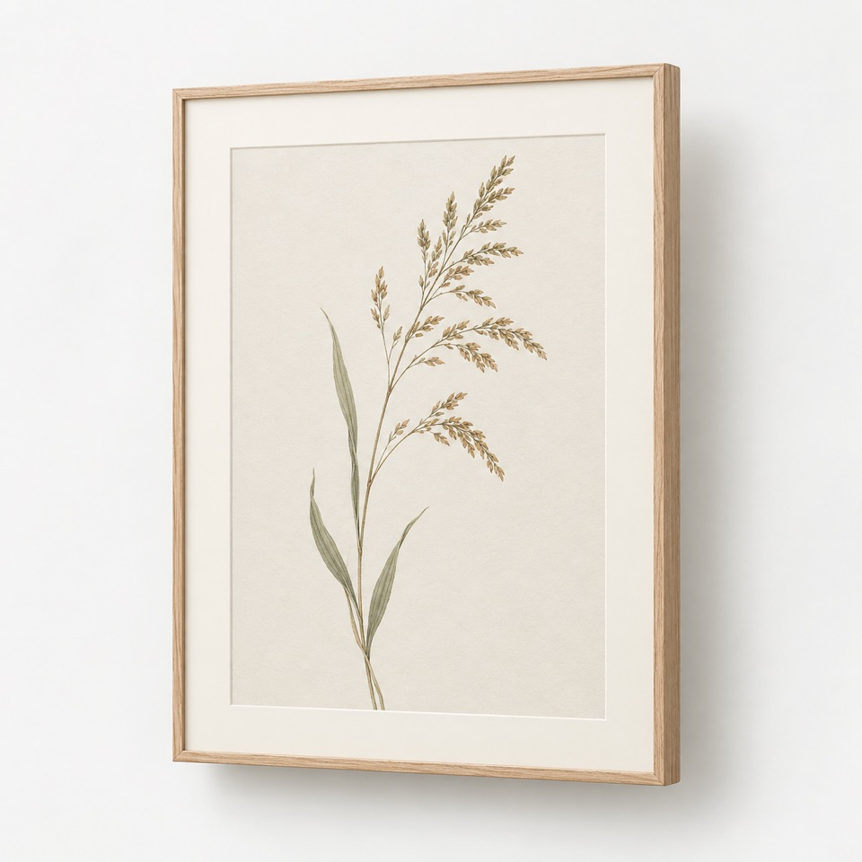
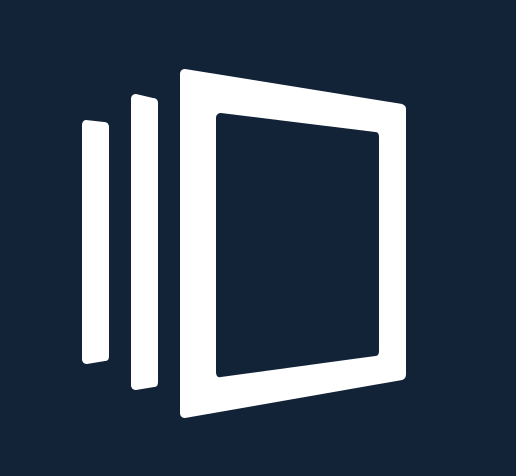
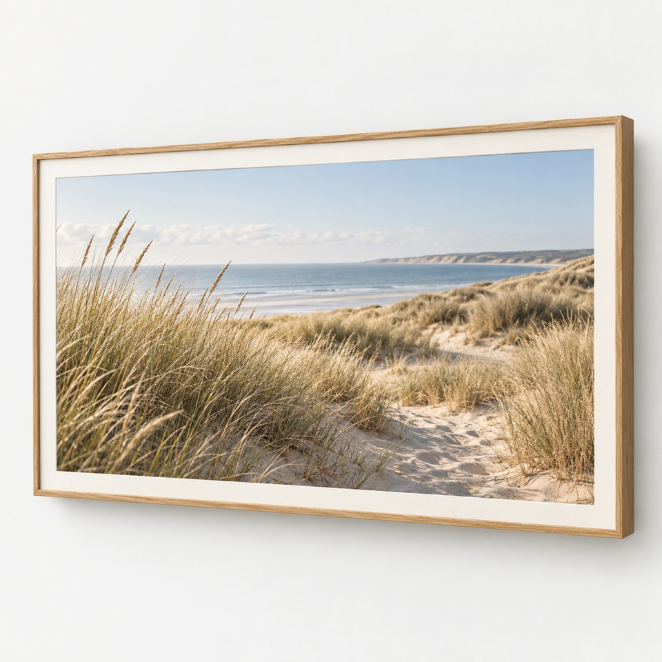
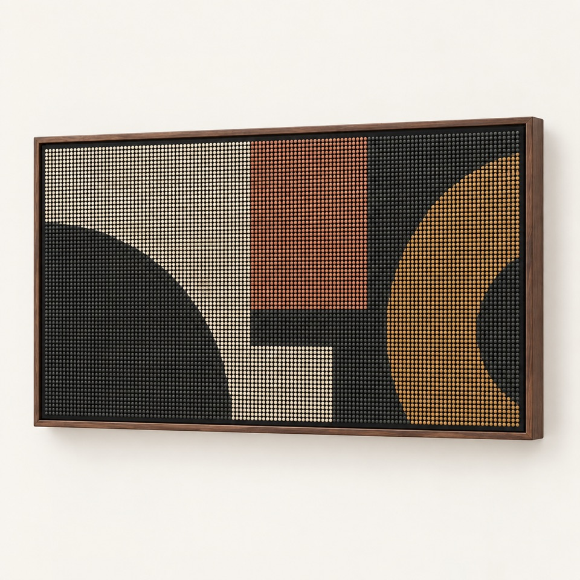

F / 01

Paper
REFLECTIVEColor e-paper holds an image when its electronics sleep. A refresh costs time and energy; the controller and packed panel profile are still open work.
Waveshare E6 candidate · 1600 × 1200

frameshift. FIELD GUIDE · DRAFT 01One still image, prepared for the medium you choose. Explore the three reference paths and see how a frame keeps its previous image when delivery is uncertain.
Choose a mediumThree independent reference builds. Their named panels are candidates, pending exact controller and physical validation.

Color e-paper holds an image when its electronics sleep. A refresh costs time and energy; the controller and packed panel profile are still open work.
Waveshare E6 candidate · 1600 × 1200

A high-detail still on a matte panel. The backlight needs continuous power while visible; a longer artwork interval alone does not save it.
BOE QHD geometry candidate · 2560 × 1440

Six coarse RGB panels give still graphics their own visual language. Scanning and brightness draw power even when the artwork does not change.
Six Waveshare P3 modules · 192 × 128
This simulation runs in your browser. Its crop is illustrative; it does not render panel bytes, pair hardware, or confirm a physical display.
Your image stays in this browser tab.
Open this choice in installed Frameshift ↗
The installed app reviews this hint; it does not pair or send a still.
Add a local still to see a center crop.
The installed Zig renderer and a qualified capability profile determine exact artifact bytes. This preview is not panel color evidence.
Try a failure, then confirm the same revision. The previous still remains current until a matching displayed outcome.
Select a still and queue a simulated revision.
Measure the display and power path first. A simulation cannot settle mechanical, electrical, or controller fit.
Record the exact panel revision, active area, outline, connector clearance, depth, power, and mounting geometry for your chosen class.
The planned signed Mac release will prepare still images and preserve masters locally. Ubuntu packages and a separate Pi appliance need their own qualification.
Install the receiver, pair in physical pair mode, verify its capability, then transfer and confirm one still. The website never pairs or sends to a frame.
The current app bundle is a development build. Signed, notarized Mac downloads and Linux packages will appear here only with a checked release manifest and installed-flow evidence.